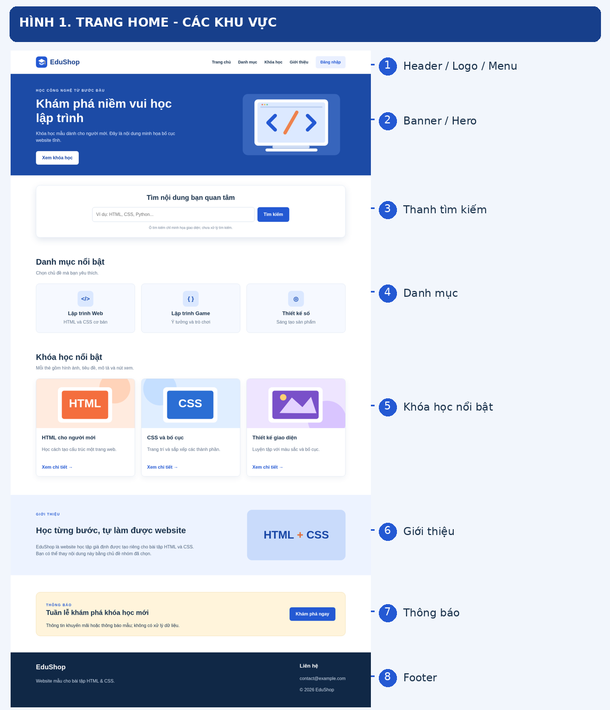

/ CHƯƠNG 02 · BÀI TẬP THỰC HÀNHTự tay thiết kế
Tự tay thiết kế
Home & Login.
Hãy đọc yêu cầu, lấy mã khởi động, tự thực hiện trước khi xem đáp án tham khảo. Chỉ dùng HTML và CSS, không cần chức năng đăng nhập hay tìm kiếm thật.
Để chỉnh sửa mã, tải repository về máy và mở thư mục 03-thuc-hanh/.../starter/ bằng VS Code. Mở file từ website chỉ dùng để xem, không thể lưu sửa đổi vào GitHub.
MÃ KHỞI ĐỘNG (STARTER)
Thiết kế Home
Tạo giao diện phù hợp với đề tài nhóm, có thể điều chỉnh thành phần dựa theo chủ đề.

Thiết kế Login
Chỉ thiết kế form: không cần kiểm tra tài khoản, đăng nhập thật hoặc backend.

Gợi ý triển khai
- Tạo thư mục dự án, hai file
index.htmlvàlogin.htmlcùng file CSS. - Dùng thẻ
divđể gom các khu vực nội dung có liên quan. - Áp dụng Box Model để tạo khoảng cách giữa nội dung, viền và các khối.
- Dùng Flexbox cho header/navigation và CSS Grid cho danh mục, sản phẩm.
- Viết HTML form và dùng CSS định dạng trang đăng nhập.
- Mở hai trang trong trình duyệt, đối chiếu với checklist trước khi nộp.
Cần xem gợi ý?
Hoàn thành bài trước khi mở code mẫu. Mẫu chỉ để tham khảo, không bắt buộc thiết kế giống hệt.